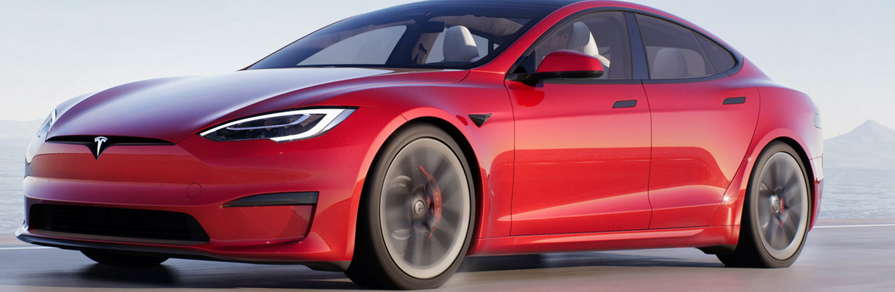

samochody elektryczne
Tesla przedstawiła przeprojektowany Model S z nowym wnętrzem i opcją zasięgu do 520 mil (840 km). Takiego wnętrza nie ma żaden inny samochód, zobaczcie sami.
Nowe wnętrze? Prostota i wizja przyszłości
Wziumować może każdy, ale prawdziwym wziumerem może nazwać się tylko ten, kto zna genezę tego słowa.
Wypowiedź workonfire#8262:
Drugi z modeli Tesli, Model X, także poprawiono na zewnątrz i we wnętrzu. X pojawi się również jako wersja z tym nowym układem napędowym, chociaż odświeżenie SUV-a nie jest tak obszerne, jak sedana.Nowy Model S ma kilka lekkich aktualizacji wyglądu zewnętrznego samochodu, w tym standardowy duży szklany dach, ale największa wizualna zmiana dotyczy wnętrza. Tesla zmieniła ekran dotykowy na bardziej podobny do tego, który można znaleźć w Modelu 3 i Modelu Y, ale ze znacznie mniejszymi ramkami (widzieliśmy go w prototypie Cybertrucka). Jest też kierownica motylkowa w kształcie litery U, podobna do tej, którą widzieliśmy w prototypowym nadchodzącym Roadsterze drugiej generacji, oraz ekran za konsolą środkową dla pasażerów na tylnych siedzeniach. W przeciwieństwie do Modelu 3 i Modelu Y, nowy Model S nadal posiada ekran za kierownicą.